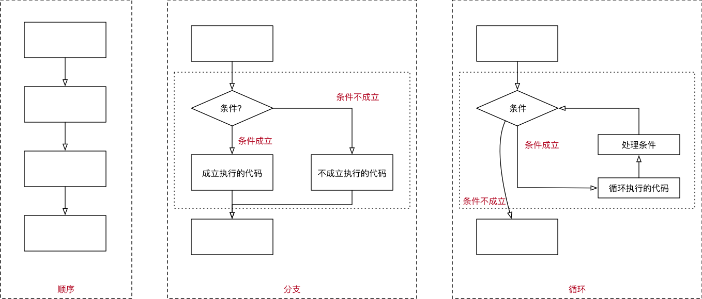
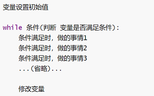
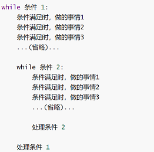
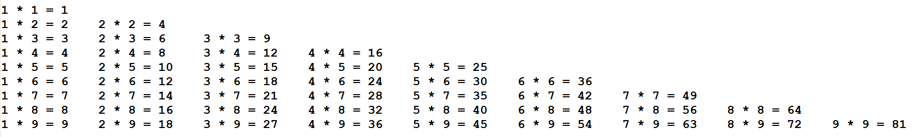
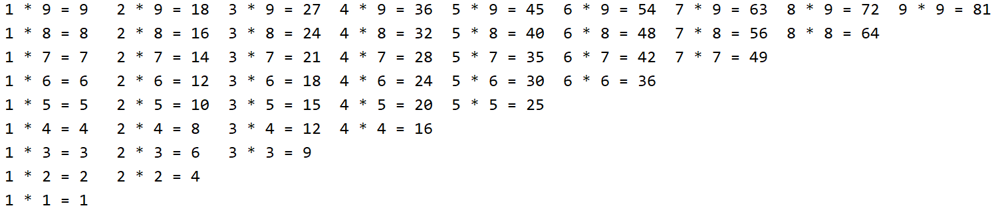

<!DOCTYPE lake>
<h2 data-lake-id="UsLzK" data-lake-index-type="2" id="UsLzK"><span data-lake-id="u663faaa1" id="u663faaa1">程序的三种执行流程</span></h2><p data-lake-id="u41d19153" id="u41d19153"><span data-lake-id="ueedf4ae4" id="ueedf4ae4">程序的执行流程有三种,分别是：</span><strong><span data-lake-id="u55e4e80b" id="u55e4e80b">顺序执行</span></strong><span data-lake-id="u0aa43d87" id="u0aa43d87">、</span><strong><span data-lake-id="u777419e3" id="u777419e3">分支执行</span></strong><span data-lake-id="u5c259235" id="u5c259235">、</span><strong><span data-lake-id="ue15243af" id="ue15243af">循环执行</span></strong></p><p data-lake-id="u09f9802d" id="u09f9802d"></p><ul list="u28a361c2"><li data-lake-id="u14d869bf" fid="u0129e72d" id="u14d869bf"><span data-lake-id="u58223b52" id="u58223b52">顺序 —— 从上向下，顺序执行代码</span></li><li data-lake-id="ub61cde76" fid="u0129e72d" id="ub61cde76"><span data-lake-id="ub2642f20" id="ub2642f20">分支 —— 根据条件判断，决定执行代码的分支</span></li><li data-lake-id="u72e07f4a" fid="u0129e72d" id="u72e07f4a"><span data-lake-id="ued605647" id="ued605647">循环 —— 让 特定代码 </span><strong><span data-lake-id="u8b1db5e2" id="u8b1db5e2">重复</span></strong><span data-lake-id="u177045c7" id="u177045c7"> 执行</span></li></ul><p data-lake-id="ua0fa2186" id="ua0fa2186"><br/></p><h2 data-lake-id="QMfsV" data-lake-index-type="2" id="QMfsV"><span data-lake-id="u8fe2bca8" id="u8fe2bca8">while循环</span></h2><p data-lake-id="u37d275ba" id="u37d275ba"><span data-lake-id="u8f515449" id="u8f515449">循环的作用是</span><strong><span data-lake-id="ueac6934c" id="ueac6934c">让指定的代码重复的执行</span></strong></p><p data-lake-id="u7276ee9e" id="u7276ee9e"><span data-lake-id="u62ff083e" id="u62ff083e"><br/></span><code data-lake-id="u76a97980" id="u76a97980"><span data-lake-id="u9026b133" id="u9026b133">while</span></code><span data-lake-id="u88516d2f" id="u88516d2f"> 循环最常用的应用场景就是 让执行的代码 按照 </span><strong><span data-lake-id="ua69241bf" id="ua69241bf">指定的次数</span></strong><span data-lake-id="u16ff2740" id="u16ff2740"> 重复 执行</span></p><h3 data-lake-id="eYVvd" data-lake-index-type="2" id="eYVvd"><span data-lake-id="udb6df91a" id="udb6df91a">基本语法</span></h3><p data-lake-id="u2a2623ca" id="u2a2623ca"></p><p data-lake-id="u4b71a969" id="u4b71a969"><br/></p><p data-lake-id="ua3928d6d" id="ua3928d6d"><span data-lake-id="u7c0b3d08" id="u7c0b3d08">应用场景：</span></p><blockquote class="lake-alert lake-alert-info" data-lake-id="ud50458eb" id="ud50458eb"><p data-lake-id="u6ed40b6a" id="u6ed40b6a"><span data-lake-id="u3b7fe7ad" id="u3b7fe7ad">需求:</span></p><p data-lake-id="ua5e88952" id="ua5e88952"><span data-lake-id="u508754e1" id="u508754e1">跟媳妇承认错误，说一万遍"媳妇儿，我错了"</span></p><p data-lake-id="ufc3d6efc" id="ufc3d6efc"><span data-lake-id="u4c913f1d" id="u4c913f1d"> print("媳妇儿，我错了") </span></p><p data-lake-id="ub99c694f" id="ub99c694f"><span data-lake-id="u4be884f6" id="u4be884f6"> print("媳妇儿，我错了") </span></p><p data-lake-id="uc7d4d3fc" id="uc7d4d3fc"><span data-lake-id="u21807f81" id="u21807f81"> print("媳妇儿，我错了") </span></p><p data-lake-id="u28884c64" id="u28884c64"><span data-lake-id="u2d0daa02" id="u2d0daa02"> ...(还有99997遍)...</span></p></blockquote><p data-lake-id="ue76d4d97" id="ue76d4d97"><span data-lake-id="u038f4253" id="u038f4253">循环代码的实现:</span></p><span class="yuque-card-unsupported">[codeblock]</span><h3 data-lake-id="YX7bM" data-lake-index-type="2" id="YX7bM"><span data-lake-id="u57762d9c" id="u57762d9c">循环变量和死循环</span></h3><p data-lake-id="u6cc45153" id="u6cc45153"><span data-lake-id="u2a51bb67" id="u2a51bb67">对于上面的代码</span><code data-lake-id="uc7f2aace" id="uc7f2aace"><span data-lake-id="u9af2f6c6" id="u9af2f6c6">i</span></code><span data-lake-id="u902c4a9d" id="u902c4a9d">就是循环变量，循环变量的主要作用是控制循环什么时候停下来。</span></p><p data-lake-id="ue9664d16" id="ue9664d16"><span data-lake-id="u732db017" id="u732db017">一般情况下，程序中的计数是从0开始的,所以上面的代码通常我们可以写成下面这种:</span></p><span class="yuque-card-unsupported">[codeblock]</span><p data-lake-id="uc782862e" id="uc782862e"><span data-lake-id="u3e184851" id="u3e184851">死循环指的是程序</span><strong><span data-lake-id="u13eceeba" id="u13eceeba">持续执行，无法终止</span></strong><span data-lake-id="u31e27715" id="u31e27715">。原因通常是忘记在循环内部</span><strong><span data-lake-id="uf88d75e8" id="uf88d75e8">修改循环变量</span></strong><span data-lake-id="ue489f818" id="ue489f818">的值</span></p><p data-lake-id="u00f4f42d" id="u00f4f42d"><span data-lake-id="ua6ec439c" id="ua6ec439c">比如:</span></p><span class="yuque-card-unsupported">[codeblock]</span><p data-lake-id="u8c65987a" id="u8c65987a"><span data-lake-id="u4fdb5ab7" id="u4fdb5ab7">和正常代码相比，在循环内部忘记修改循环变量，循环条件一直满足，循环就会一直执行。死循环在程序中也有一定的使用场景，可以保证程序不会停止。</span></p><p data-lake-id="u62ec064d" id="u62ec064d"><span data-lake-id="u8068b101" id="u8068b101">比如：QQ的服务器要保证能一直接收到消息，通常内部会有死循环支持。再比如，做界面开发时，为了保证界面能一直显示，内部也通常会维护一个死循环</span></p><p data-lake-id="u394ed483" id="u394ed483"><span data-lake-id="ue96c340d" id="ue96c340d">死循环最简单的写法如下:</span></p><span class="yuque-card-unsupported">[codeblock]</span><p data-lake-id="uceadf94e" id="uceadf94e"><span data-lake-id="u68ea903d" id="u68ea903d">其中</span><code data-lake-id="u8157e7db" id="u8157e7db"><span data-lake-id="ueab2527f" id="ueab2527f">pass</span></code><span data-lake-id="u02092675" id="u02092675">是Python的空语句，只是为了保证语法的完整，并没有实际意义。</span></p><h3 data-lake-id="Jx5Tv" data-lake-index-type="2" id="Jx5Tv"><span data-lake-id="u54dd0c3e" id="u54dd0c3e">练习-打印直角三角形</span></h3><p data-lake-id="u5cb98087" id="u5cb98087"><span data-lake-id="u9e9da24d" id="u9e9da24d">根据用户输入的数值</span><code data-lake-id="u2aad1fb2" id="u2aad1fb2"><span data-lake-id="u86a721cc" id="u86a721cc">n</span></code><span data-lake-id="u1711355a" id="u1711355a">，打印</span><code data-lake-id="u4211aa5b" id="u4211aa5b"><span data-lake-id="u40cda2e6" id="u40cda2e6">n</span></code><span data-lake-id="u64611986" id="u64611986">行三角形</span></p><h4 data-lake-id="DIML3" data-lake-index-type="2" id="DIML3"><span data-lake-id="u882f00c5" id="u882f00c5">正直角三角形</span></h4><span class="yuque-card-unsupported">[codeblock]</span><p data-lake-id="u01333deb" id="u01333deb"><span data-lake-id="u1f494778" id="u1f494778">代码:</span></p><span class="yuque-card-unsupported">[codeblock]</span><h4 data-lake-id="BtJEa" data-lake-index-type="2" id="BtJEa"><span data-lake-id="uf1c526bb" id="uf1c526bb">倒直角三角形</span></h4><span class="yuque-card-unsupported">[codeblock]</span><p data-lake-id="uf4fe917b" id="uf4fe917b"><span data-lake-id="ubfb7655b" id="ubfb7655b">代码实现：</span></p><span class="yuque-card-unsupported">[codeblock]</span><p data-lake-id="uf48f1154" id="uf48f1154"><br/></p><h2 data-lake-id="Vlm0c" data-lake-index-type="2" id="Vlm0c"><span data-lake-id="u6f2d4ebe" id="u6f2d4ebe">嵌套循环</span></h2><p data-lake-id="u34596ec6" id="u34596ec6"><span data-lake-id="uac86efaf" id="uac86efaf">while 嵌套就是：while 里面还有 while</span></p><p data-lake-id="u4b5f6e2c" id="u4b5f6e2c"><span data-lake-id="u8d2ea21f" id="u8d2ea21f">while循环嵌套的格式如下:</span></p><p data-lake-id="ufd4b803f" id="ufd4b803f"></p><p data-lake-id="u2ebf575f" id="u2ebf575f"><span data-lake-id="u93a9ea8b" id="u93a9ea8b">代码如下:</span></p><span class="yuque-card-unsupported">[codeblock]</span><h2 data-lake-id="Ban5G" data-lake-index-type="2" id="Ban5G"><span data-lake-id="u59568936" id="u59568936">练习-九九乘法表</span></h2><h3 data-lake-id="JYUzL" data-lake-index-type="2" id="JYUzL"><span data-lake-id="u49c44f91" id="u49c44f91">正序九九乘法表</span></h3><p data-lake-id="ua251f6a3" id="ua251f6a3"></p><p data-lake-id="ud5225928" id="ud5225928"><span data-lake-id="u6a3f7b54" id="u6a3f7b54">思路分析：</span></p><blockquote class="lake-alert lake-alert-info" data-lake-id="ud4366a46" id="ud4366a46"><ol list="u95c335bc"><li data-lake-id="u8c8ac187" fid="u02bf736b" id="u8c8ac187"><span data-lake-id="u6e179df0" id="u6e179df0">打印星星</span></li><li data-lake-id="u37bdb6a9" fid="u02bf736b" id="u37bdb6a9"><span data-lake-id="u109b2e8b" id="u109b2e8b">使用嵌套循环打印阶梯星星</span></li><li data-lake-id="u570ac2ac" fid="u02bf736b" id="u570ac2ac"><span data-lake-id="u99b5b49b" id="u99b5b49b">将星星替换成乘法口诀公式</span></li></ol></blockquote><p data-lake-id="u12ab6a7a" id="u12ab6a7a"><strong><span data-lake-id="ufdc306b3" id="ufdc306b3">​</span></strong><span data-lake-id="u2dee3f88" id="u2dee3f88">使用嵌套循环打印星星</span><strong><span data-lake-id="u0bb08013" id="u0bb08013">：</span></strong></p><span class="yuque-card-unsupported">[codeblock]</span><p data-lake-id="u4273dad2" id="u4273dad2"><span data-lake-id="u9ae2f9d3" id="u9ae2f9d3">输出结果:</span></p><span class="yuque-card-unsupported">[codeblock]</span><p data-lake-id="u7ed64a90" id="u7ed64a90"><strong><span data-lake-id="udba7d7af" id="udba7d7af">将星星替换成乘法口诀</span></strong></p><p data-lake-id="uc637756f" id="uc637756f"><span data-lake-id="uad357fb4" id="uad357fb4">规则：</span><code data-lake-id="u41241fa1" id="u41241fa1"><span data-lake-id="u41b9e36c" id="u41b9e36c">列号 x 行号 = 结果</span></code></p><span class="yuque-card-unsupported">[codeblock]</span><p data-lake-id="uac9e61c3" id="uac9e61c3"><span data-lake-id="u11575dbb" id="u11575dbb">输出结果:</span></p><p data-lake-id="u1cede045" id="u1cede045"></p><h3 data-lake-id="s863b" data-lake-index-type="2" id="s863b"><span data-lake-id="u46b55cf6" id="u46b55cf6">倒序九九乘法表</span></h3><p data-lake-id="u7582d1f1" id="u7582d1f1"></p><p data-lake-id="uc5ad9574" id="uc5ad9574"><span data-lake-id="u81eec1fc" id="u81eec1fc">分析：</span></p><blockquote class="lake-alert lake-alert-info" data-lake-id="ue6c0c69f" id="ue6c0c69f"><p data-lake-id="ub4666afb" id="ub4666afb"><span data-lake-id="ud09bb742" id="ud09bb742">只需要将行号从9开始即可</span></p></blockquote><p data-lake-id="uecbfb2db" id="uecbfb2db"><span data-lake-id="u6f412679" id="u6f412679">​</span><br/></p><p data-lake-id="ua5921b4f" id="ua5921b4f"><span data-lake-id="ub081c9f1" id="ub081c9f1">代码：</span></p><span class="yuque-card-unsupported">[codeblock]</span>